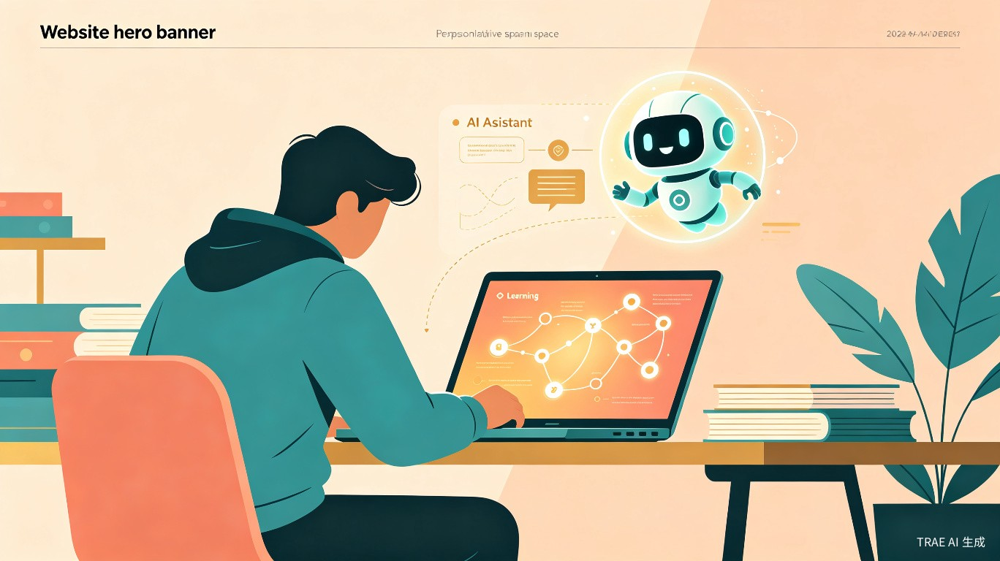
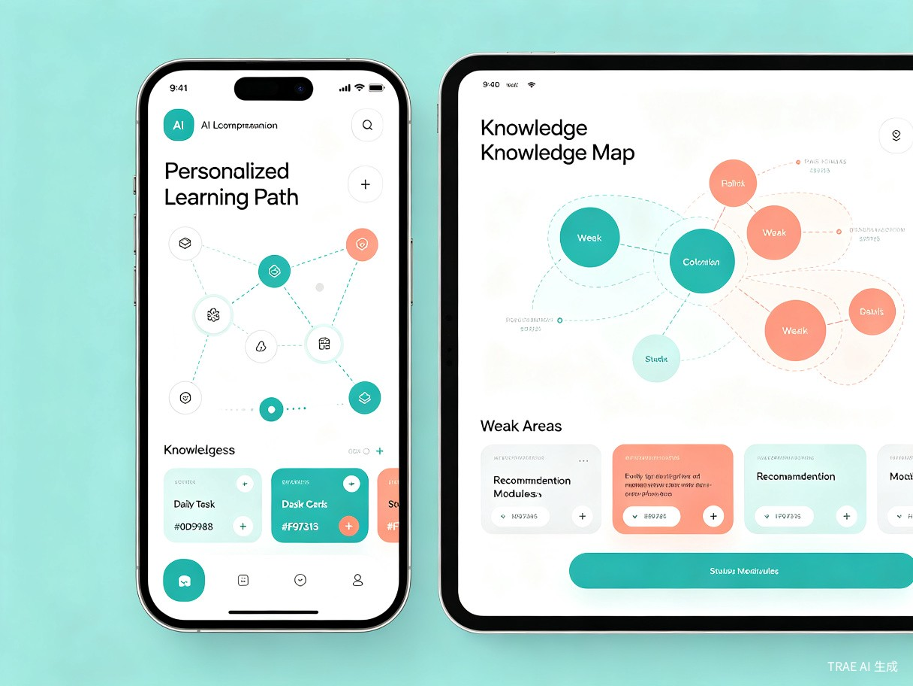
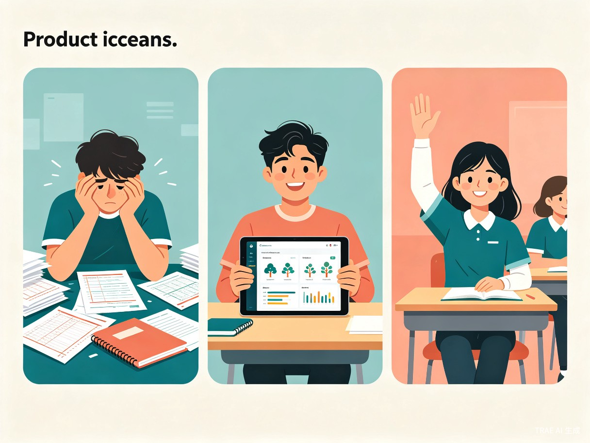

1 创意名称与创意介绍
想解决什么问题
当前中学生面临的最大学习困境是"不知道自己不会什么"。学生在大量刷题后，往往不清楚自己的知识薄弱点在哪里，也不知道应该优先复习哪些内容。家长和老师也缺乏有效的工具来精准定位学生的学习盲区，导致学习效率低下、时间浪费严重。
为什么会想到做这个
灵感来源于对身边中学生学习状态的观察——许多同学每天花费大量时间刷题，但成绩提升缓慢。深入调研后发现，核心问题在于学习缺乏系统性规划，学生不知道自己知识体系中的"漏洞"在哪里。随着 AI 大模型技术的成熟，我们认为完全可以通过技术手段解决这个问题，为每个学生构建一个"AI 学习教练"。
大概是什么产品
智学伴是一款跨平台 AI 学习助手产品，以移动端 App为核心，同时支持微信小程序和Web 网页端。产品通过拍照识别错题、分析学习行为数据，结合学科知识图谱，自动生成个性化的学习路径和每日练习计划，帮助学生精准提升。
核心定位：不做题库，不做直播课——只做"最懂你的学习导航仪"，告诉学生"你应该学什么、怎么学、学到什么程度"。

2 目标用户及痛点
面向哪些用户
核心用户：中学生（初一至高三）
面临升学压力、需要系统复习和精准提升的学生群体，覆盖数理化英等主要学科。
辅助用户：家长
关注孩子学习进度、希望了解孩子薄弱环节的家长，可通过家长端查看学习报告。
拓展用户：教师与辅导机构
需要了解班级整体学情、实现分层教学的老师，以及提供个性化教学服务的培训机构。
在什么场景下使用
- 日常学习场景：学生完成作业或测验后，拍照上传错题，系统自动分析并更新知识图谱，推荐针对性练习。
- 考前复习场景：期中/期末考试前，系统根据历史错题和知识掌握度，生成高效复习计划，避免无效复习。
- 假期规划场景：寒暑假期间，系统根据上学期学习情况，规划假期学习路径，实现弯道超车。
- 碎片时间场景：利用 10-15 分钟碎片时间，完成系统推荐的"微练习"，持续巩固薄弱知识点。
当前痛点
| 痛点描述 | 具体表现 | 影响程度 |
|---|---|---|
| 知识盲区不可见 | 学生不清楚自己哪些知识点没掌握，只能凭感觉复习 | 严重 |
| 刷题效率低下 | 大量重复练习已掌握的内容，薄弱环节反而缺乏针对性训练 | 严重 |
| 缺乏个性化指导 | 班级授课模式下，老师无法针对每个学生的薄弱点单独辅导 | 中等 |
| 学习动力不足 | 看不到进步、缺乏成就感，容易产生厌学情绪 | 中等 |
| 家长焦虑无解 | 家长想帮孩子但不知道从何入手，只能报各种补习班 | 一般 |

3 价值与意义
📈 效率提升价值
通过 AI 精准定位知识薄弱点，将学习效率提升 40% 以上。学生不再需要在已掌握的知识上浪费时间，每一分钟的学习都投入在最需要提升的环节。系统自动规划的学习路径，让"学什么、怎么学"变得清晰可见，大幅减少无效学习时间。
🌍 社会价值
智学伴致力于促进教育公平。优质的一对一辅导价格高昂，普通家庭难以负担。智学伴通过 AI 技术让每个学生都能获得"私人学习教练"级别的个性化指导，缩小城乡、贫富之间的教育资源差距，让技术真正服务于教育普惠。
商业价值展望：中国 K12 在线教育市场规模持续增长，家长对个性化学习工具的付费意愿强烈。智学伴采用"基础功能免费 + 高级功能订阅"的商业模式，同时面向 B 端学校/机构提供学情分析服务，具备清晰的商业化路径。
核心功能亮点
AI 拍照识题
拍照即可识别错题，自动提取题目、答案和知识点，无需手动录入。
知识图谱可视化
构建学科知识图谱，用颜色标注掌握程度，让薄弱环节一目了然。
智能学习路径
基于知识图谱和遗忘曲线，自动生成最优学习顺序和每日任务。
精准推送练习
只推送学生最需要的练习题，难度自适应，避免无效刷题。
学习数据看板
多维度学习数据可视化，学生和家长都能清晰看到进步轨迹。
AI 学科教练
基于大模型的 AI 教练，随时解答学习疑问，提供解题思路引导。
4 技术架构概览
智学伴采用前后端分离架构，结合 AI 大模型能力，构建完整的学习智能闭环：
前端层
Flutter 跨平台 App + 微信小程序 + Vue.js Web 端，三端统一体验
AI 服务层
OCR 识题 + 大模型解题分析 + 知识图谱推理 + 推荐算法引擎
数据层
用户学习行为数据库 + 学科知识图谱库 + 题库资源池
技术亮点：采用"知识图谱 + 大模型"双引擎架构。知识图谱负责精准定位知识薄弱点（结构化推理），大模型负责自然语言理解与个性化指导（语义理解），两者协同实现真正意义上的"因材施教"。
5 总结与展望
智学伴的愿景是成为每个中学生的 AI 学习伙伴。我们相信，AI 技术不应仅仅用于"替代老师"，而应该用于"赋能学生"——帮助学生更好地认识自己的学习状态，更高效地规划学习路径，更有信心地面对每一次考试。
在产品初期，我们将聚焦初中数学和物理两个学科，打磨核心的错题分析和学习路径推荐功能。中期计划覆盖全学科、引入社交学习功能（学习小组、同伴互助）。远期目标是构建一个开放的 AI 教育平台，让第三方教育内容创作者也能接入智学伴的知识图谱体系，共同为学生提供更丰富的学习资源。
智学伴，让每一分钟的学习都有方向。